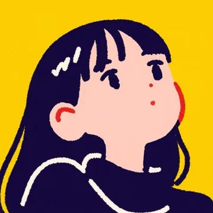

So,what’s next?
2D Animation3D StyleIllustration
Pick up
注目の作品——
Works
作品一覧Shorts
SNS向けのショート動画Profile

Motion DesignerDiDi
映像制作会社でモーショングラフィックスを担当したのち独立。企画・絵コンテからデザイン、アニメーション、仕上げまで一貫して手がけます。尺の短い動画でも「つい最後まで見てしまう」動きを大切にしています。
After EffectsPremiere ProCinema 4DIllustratorProcreate
News
お知らせContact
お問い合わせ映像制作のご依頼、ご相談はこちらからどうぞ。
企画段階からでもお気軽にご連絡ください。
hello@didi-motion.jp